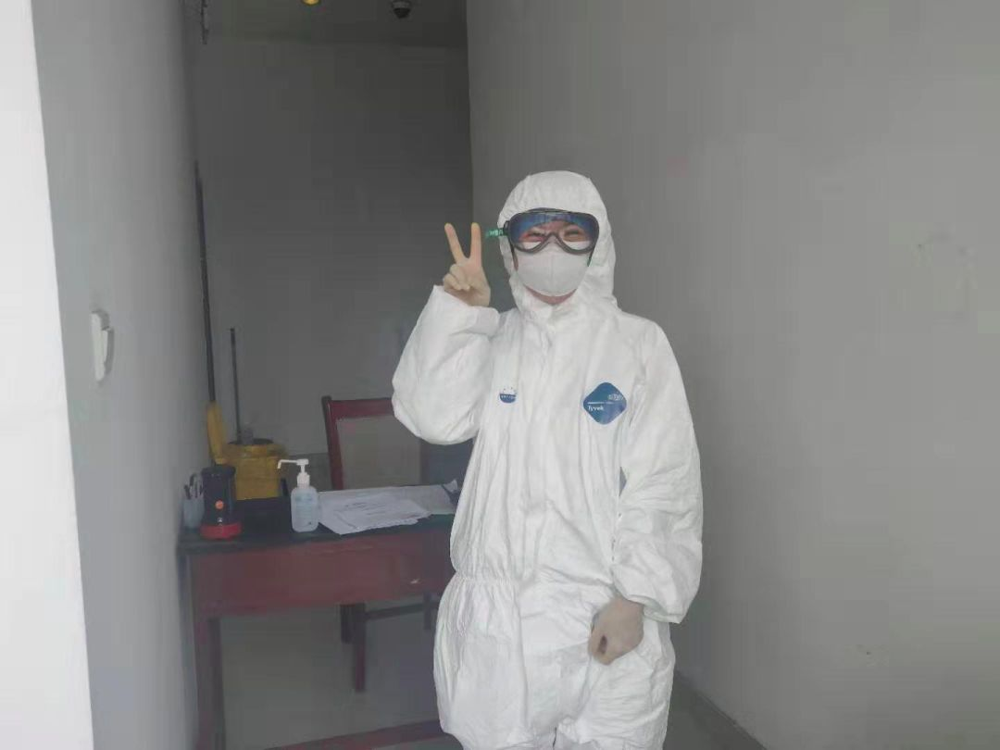
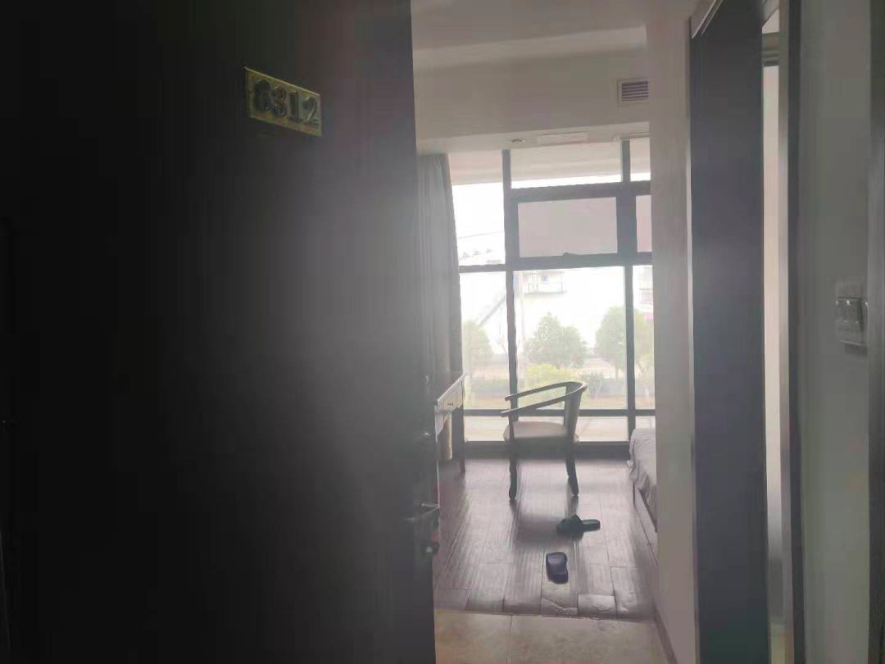
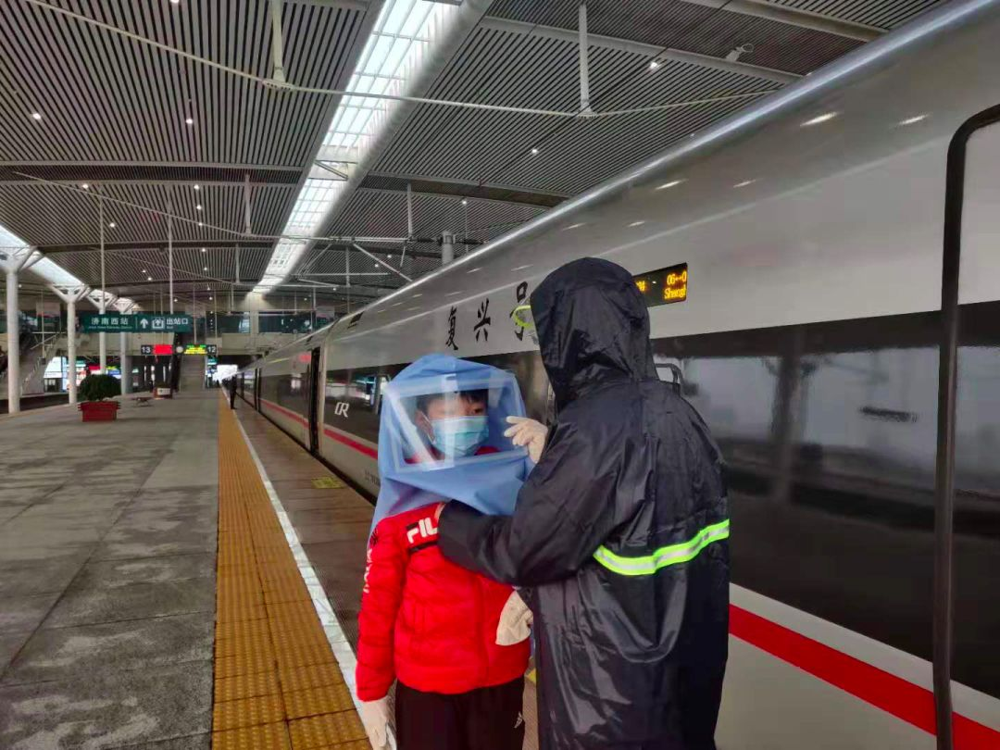

「 隔离日记 」 20200206
原文链接 备份链接 播放音乐 | 阅读效果更佳 感谢 | 您对霍超LEGAL的关注、阅读与分享 今天在朋友圈里看到的最多的一句话，是武汉作家方方的一段话，“时代的一粒灰，落在个人头上，就是一座山。我们唯一的事，就是把这一切都扛下来。” …
播放音乐 | 阅读效果更佳
感谢 | 您对霍超LEGAL的关注、阅读与分享

临别时医护人员的祝福
感谢所有人的祝福！更感谢所有奋斗在一线的医护工作者们！
有的人本不是伟大的，从未想过要为天地立心，为生民立命，为往圣继绝学，为万世开太平。一如所有平凡而善良的人们，只是想自己的生命与美好多一点交集，出卖自己认真学习而来的一点点技能，从而保护着自己，保护着自己所爱的人，努力地汇入到这个时代滚滚向前的洪流里。
褪去这一身白衣，每天思考的不是是非、成败、生死、荣辱，而是哪条街巷里火锅、日料更好吃、双十一里哪家的优惠更实际、攒着春节的长假可以带着年纪又长了一岁的父母去哪玩耍…..然而突然之间，可能是一天，然后是几天，十几天，乃至几十天……他的职业、他的工作、他的责任让他成为一个高尚的人，一个纯粹的人，一个有道德的人，一个脱离低级趣味的人，一个有益于人民的人……一个为众人抱薪者而不畏风雪的人。
当我今天拿到《告知书》，要离开隔离区的时候，我问医护的小姐姐现在还能打的上滴滴么，她的回答是因为最近一直在这里工作，对外面的情况也不是很清楚的。

荣获“安全证书”
是的，当我在这里隔离七天之后，收获到“安全证书”的时候，我能深深记住的是，不是一个人在屋子里杂七杂八的瞎想，而是在给医护小姐姐拍完上面这张比V的照片，她边赶忙给我手上喷了消毒液，并叮嘱我还是早一点离开隔离区，这里很危险，外边更安全，而她回头立刻又赶去工作了。
英雄是需要被歌颂的，因为我们不希望再有人因为普通、诚实、善良而再被戴上英雄的荆冠；英雄是需要被书写的，因为我们不能再让热爱生活的人，守望这漫漫长夜，而未能见到月明花开。英雄是需要被见证的，因为那个英雄的“他”就是我们每个认真生活、努力工作的每个人。

德贤居 8312 房间
所以说，当我离开隔离区房间的时候，我没有突然觉得释然，没有突然觉得开心，而是感恩这段一个人的时间里，在背后实际上有那么多的人在默默的祝福着你，默默地守护着你，并且他们还在继续，他们还在坚持。
我们虽然天天见面，但却又素未谋面，我想为你祝福，愿你有一个灿烂的前程，愿你有一个温柔的长夜，愿你可以早日回家，愿你一定过上更好的生活。

在房间里留下的苹果祝福矩阵

近距离遇到了以前从楼上眺望到的狗子
怎么说，都也算是一遭难得的人生经历，尤其是在3楼的窗上看久了，突然接近了地面，甚至还有些生疏，看到了时常在窗下溜达的狗子，更感觉亲切而熟悉，既然疫情期间不能接触，那临走前多拍几张照片。
侧颜还是不错的

驶我离开隔离区的司机
1919年，鲁迅先生在《新青年》上发表的一篇文章，后来也被收入到杂文集《热风》之中，如此写道：“愿中国青年都能摆脱冷气，只是向上走，不必听自暴自弃者流的话。能做事的做事，能发声的发声。有一分热，发一分光，就像萤火一般，也可以在黑暗里发一点光，不必等候炬火。此后如竟没有炬火，我便是唯一的光。”
尽一份热、发一分光、少一点黑暗，希望就在不远方。

防护的十分到位的中国人民
查看 往日
—End—
文 | 霍超
插曲 | 《平凡之路》- 朴树
封面插图 | 霍超
正文摄影 | 霍超
封底视频 | Every Leica has a Soul
长按二维码
关注 | 公众号

点 在看 留下你的印记
谢谢一路有你＼( ^▽^ )／
Huochao
谢谢支持！
长按二维码向我转账
谢谢支持！
受苹果公司新规定影响，微信 iOS 版的赞赏功能被关闭，可通过二维码转账支持公众号。
原文链接 备份链接 播放音乐 | 阅读效果更佳 感谢 | 您对霍超LEGAL的关注、阅读与分享 今天在朋友圈里看到的最多的一句话，是武汉作家方方的一段话，“时代的一粒灰，落在个人头上，就是一座山。我们唯一的事，就是把这一切都扛下来。” …
原文链接 备份链接 播放音乐 | 阅读效果更佳 感谢 | 您对霍超LEGAL的关注、阅读与分享 每天在小房间里最经常的就是看看各种视频网站，获取一些信息，更是缓解一些无聊，不过在潜移默化中，让我细思极恐的是的越来越精确的大数据算法，推送的 …
原文链接 备份链接 播放音乐 | 阅读效果更佳 感谢 | 您对霍超LEGAL的关注、阅读与分享 _特别感谢小吴同学，日记有了衍生周边2333 _ 十分感人的是，在写日记的第五天，收到了小吴同学的漫画祝福，显得自己好像是在有猫、有狗、有光、 …
原文链接 备份链接 播放音乐 | 阅读效果更佳 感谢 | 您对霍超LEGAL的关注、阅读与分享 依据国务院2020年春节放假延长的通知，今天本应该是正式开始工作的日子，然而由于疫情的原因，全国多地的企业受地方政府的明确要求，只能继续暂停运 …
原文链接 备份链接 播放音乐 | 阅读效果更佳 感谢 | 您对霍超LEGAL的关注、阅读与分享 如今我每天蜗居在隔离房间里，都会定时看一些疫情相关的新闻，笑着看的时候看看看着就哭了；哭着看的时候，看着看着就笑 …